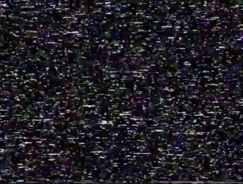
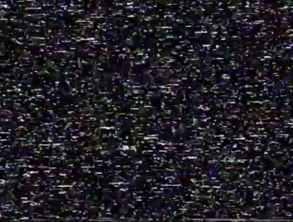
 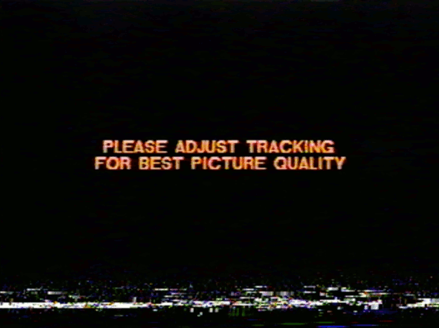
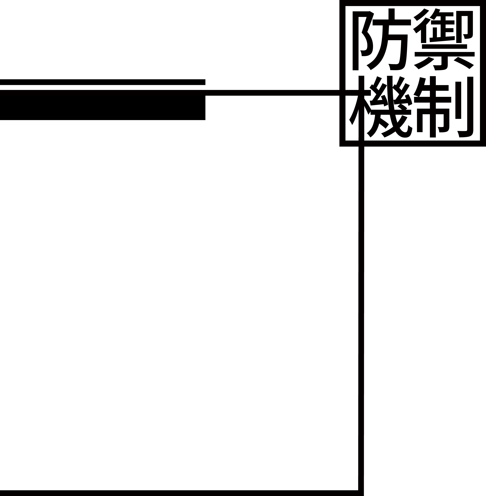
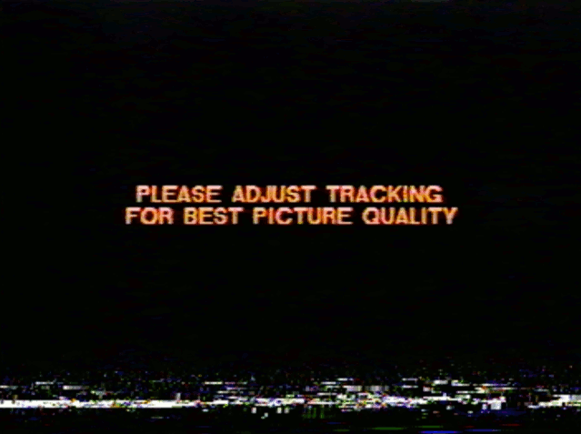
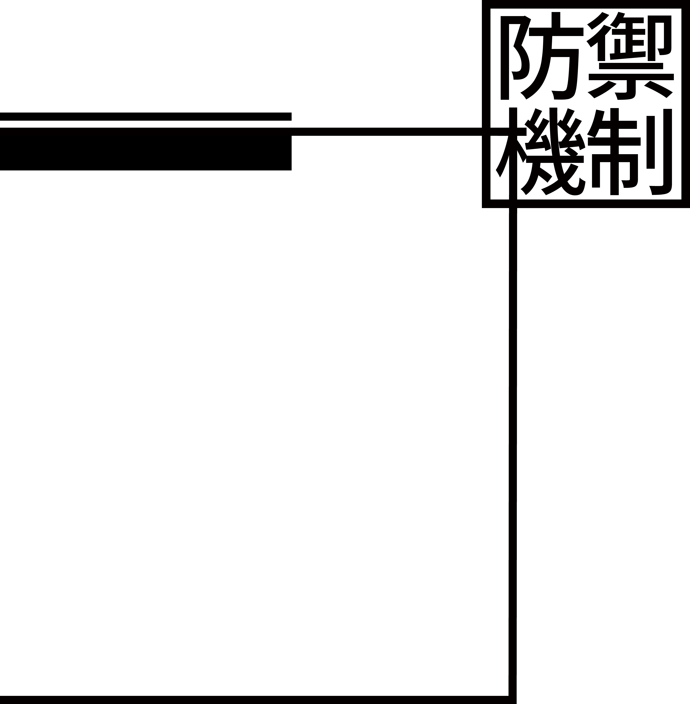
 
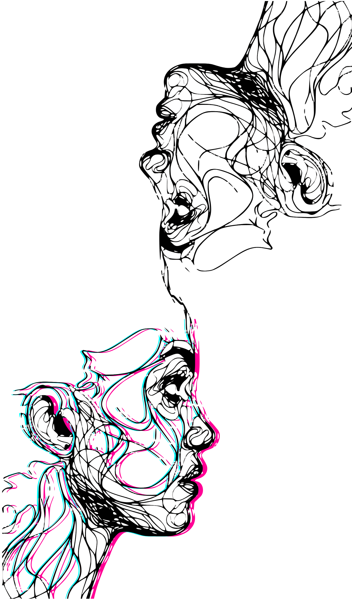
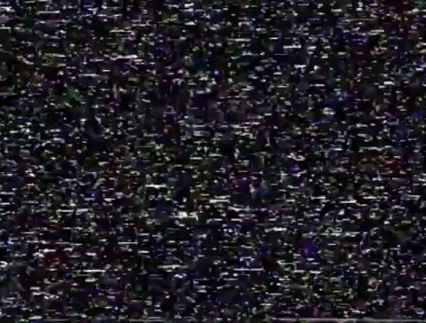
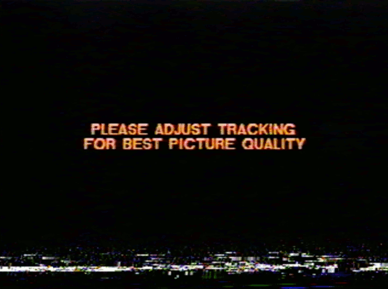
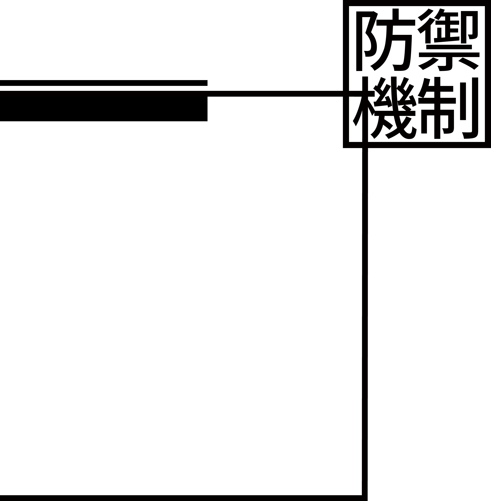
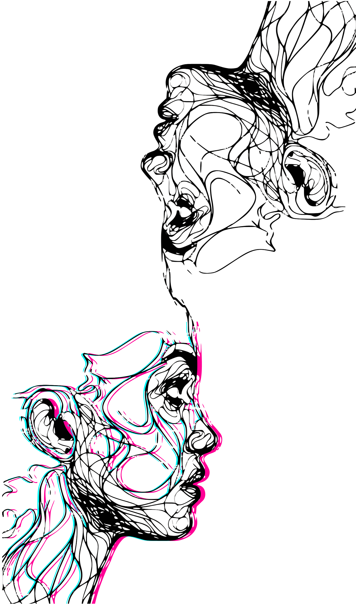
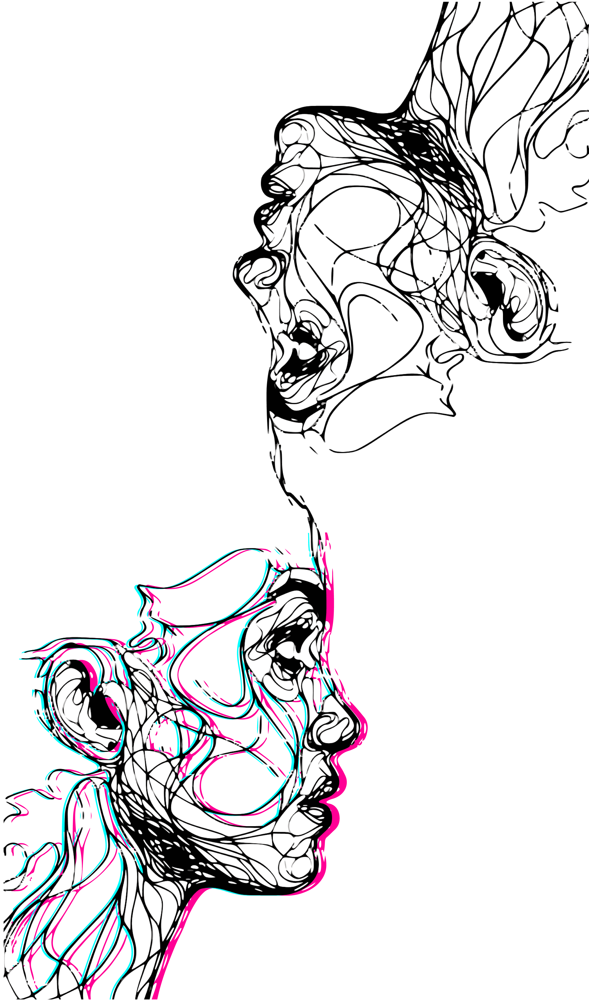
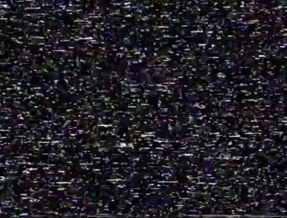
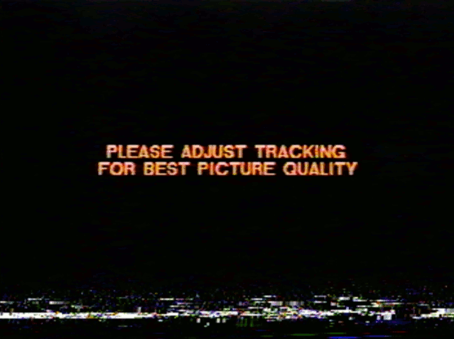
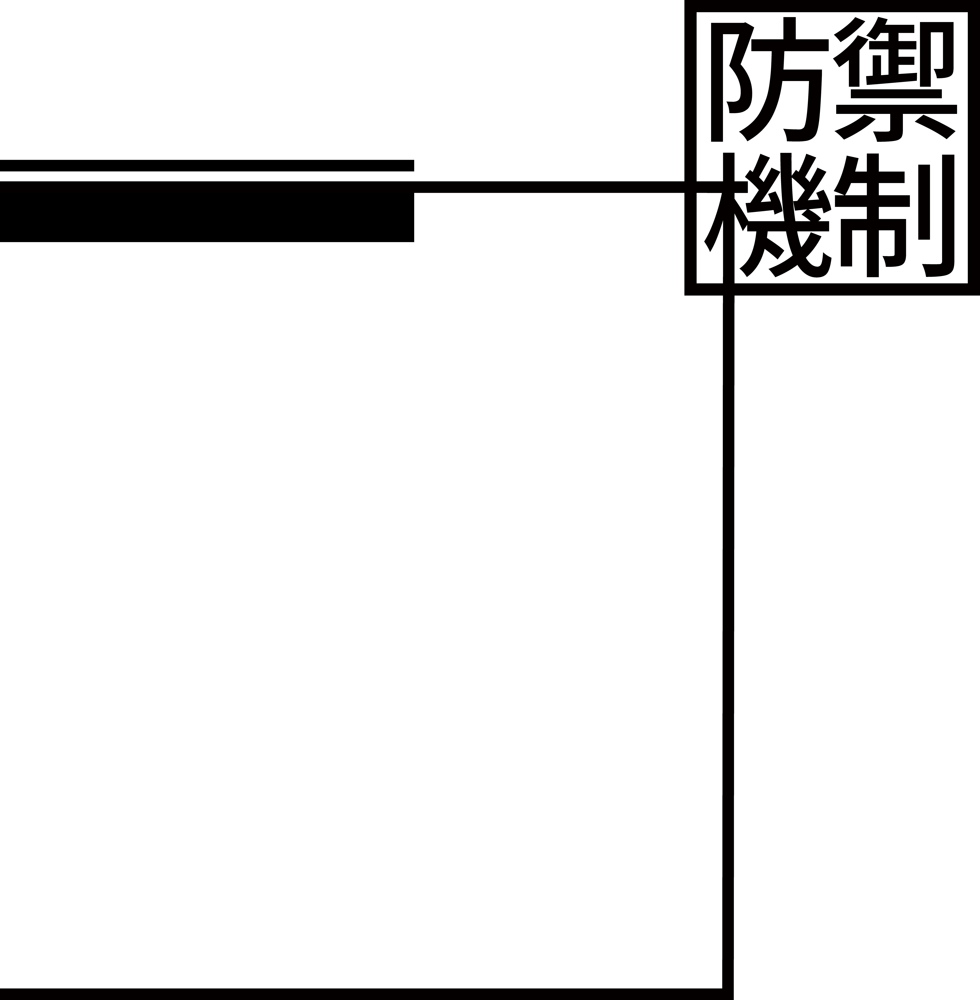
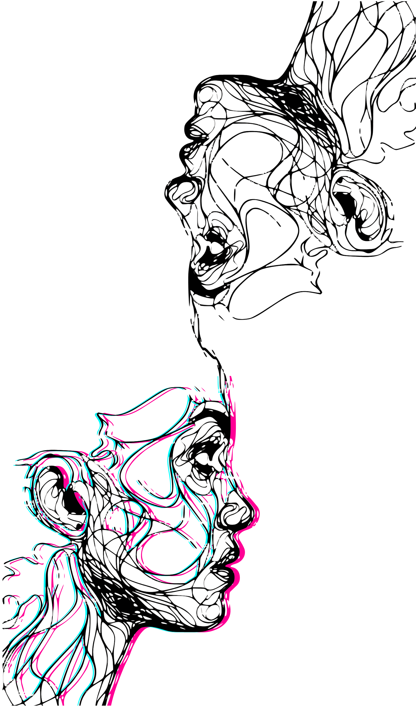
<심리> 양심과 욕망이 상충할 때,
이로 인해 생기는 감정적인
상처로부터 자신을 보호하기 위해
욕망을 무의식적으로 속이거나
상황을 다르게 해석하면서
욕망과 양심을 타협하는 행위.
자아는 본능에서 솟아오르는 충동이나
그에 반하는 죄의식을 감지하는 역할을 한다.
특정 움직임이 있을 때 불안의 신호가 발생하고,
그 신호에 따라 자아는 적당한 방어기제를 끌어들여
충동과 죄의식을 인식하지 않게 막는다.
그 덕분에 우리는 마음 속에서 어떤 일이 벌어지는지
신경 쓰지 않고 일상 생활을 할 수 있다.
방어기제에 대한 가장 흔한 오해 중 하나는
방어기제가 의지가 부족한 사람들이 자신을
합리화하기 위해 사용하는 비겁한 것으로 인간의
내적 성숙에 방해되는 것이라는 해석이다.
하지만 방어기제를 사용하지 않는 사람은 없으며,
누구나 매일 다양한 방어기제를 사용하면서 살아간다.
방어기제는 고통스러운 상황에서
천천히 정신적인 상처를 회복하는 방법인데,
만일 정신적으로 고통받는 상황을 방어기제라는
완충제 없이 직면한다면 큰 충격을 입을 것이다.
다만 건강하지 못한 방어기제를 주로 사용하는 경우,
다양한 병리적 증상으로 변형되어 표현되며,
대인 관계에서 심각한 갈등이나 충돌이 발생하게 된다.
평상시에도 미숙하고 신경증적인 방어기제를 사용하는 사람들이 있는 반면, 보통 때에는 별 문제 없이
지내다가도 스트레스가 심하거나 힘든 상황에 처하면 미성숙한 방어기제를 사용하는 사람들도 있다. 따라서
평소와 다른 방어기제를 사용한다는 것은 그만큼 무의식의 차원에서 평상시의 방식으로는 감당하기 어려운
일이 벌어지고 있다는 표현일 수도 있다.
이처럼 어떤 유형의 방어기제를 사용하느냐가 정신건강이나 성격과 유의미한 관계를 보이기 때문에
방어기제의 정도를 분류하는 것은 중요하다. 이에 조지 베일런트(George Vailant, 1992)는 방어기제의 정도를
병리, 미성숙, 신경증, 성숙의 4단계로 나누었으며, 단계가 올라갈수록 더욱 성숙한 것으로 보았다.
분류_병리적인 방어기제
Class_pathological defense mechanism
부정 (Denial)
가장 원시적인 방어기제 중 하나로서, 특정한 일이나 생각,
느낌을 있는 그대로 받아들이는 것이 고통스럽기 때문에
처음부터 그런 사건이 없었다는 듯이 여기고 그 상황을
인정하지 않으려 하는 것이다. 부정은 지각과 관련한 것과
인지와 관련한 것으로 나뉘는데, 전자는 보거나 들으려 하지
않는 등 지각한 것을 왜곡해서 회피하는 경우¹이고, 후자는
지각은 온전히 했으나 인지하는 과정에 공상이 들어가 현실을
다르게 받아들이는 경우²이다. 부정은 주로 미성숙한
방어기제로 분류되지만, 자아가 충분히 성숙한 상태에서도
외부의 상황이 미처 예상하지 못했던 극단적인 경우일 때
부정이라는 방어기제가 사용될 수 있다.
분류_미성숙한 방어기제
Class_immature defense mechanism
투사 (Projection)
투사는 자신이 받아들일 수 없는 생각이나 욕망 등을 자신이
아닌 다른 사람이나 주변 환경 때문이라고 생각하는 것이다.
그 결과, 자신은 그 일에 대해 책임을 지지 않아도 되고
무죄라고 인식하면서 죄의식에서 자유로워진다. 가장 흔하게는
어떤 일의 원인을 다른 사람의 탓으로 여기는 식이다. 주로
과민이나 분노, 공격성, 편견과 질투 등의 부정적인 모습에서
야기되는 불안을 잠재우기 위해, 그러한 것들이 타인에게서
나타난다는 식으로 투사한다. 이처럼 투사를 사용하기
위해서는 내부와 외부, 자기와 자기가 아닌 다른 대상을
구분할 줄 알아야 하고, 사회적으로 받아들여지는 것과 그렇지
않은 것을 구별할 줄 알아야 한다. 투사는 다른 사람이나
주변에 탓을 돌리고 진실을 감추어 현실을 왜곡시키므로
바람직하지 않은 방어기제이다.
분류_신경증적 방어기제
Class_neurotic defense mechanism
합리화 (Rationalization)
자책감이나 죄책감을 느끼지 않기 위해 현실을 왜곡하는
것으로, 원하는 행동을 하지 못했거나 원하는 결과를 얻지
못했을 때 그럴듯한 이유를 찾아내 자아가 상처 받지 않도록
정당화하는 방법이다. 이러한 방법은 스스로 인정하기 어려운
상황을 자신도 의식하지 못하는 사이에 그럴 듯한 이유를
붙임으로써 자존심이 손상당하거나 죄책감을 느끼는 것에서
벗어나게 해준다. 합리화는 대부분 자신이 간절히 바라는 어떤
것을 이루기 어려울 때 그것의 가치를 낮추는 것과, 인정하고
싶지 않은 것을 인정해야만 할 때 그것의 가치를 높이는 두
가지 경향으로 나타난다. 또한 무의식적으로 일어나므로
거짓말이나 변명과는 다르다.
분류_성숙한 방어기제
Class_mature defense mechanism
승화(Sublimation)
사회적으로 허용되지 않는 충동을 사회적으로 용인되거나
바람직한 형태로 바꾸어 행동함으로서 무의식적인 욕망을
충족하는 행동이다. 사회적으로 바람직하게 여겨지는 기제
중 하나로, 방어기제의 가장 성숙한 형태로 말해진다.
프로이트는 모든 예술적 창조와 같이 문화나 문명으로 부를
만한 것들은 승화라는 방어 기제가 있었기에 가능한 것이라고
주장했다. 승화는 자아로 하여금 충동의 표현을 억제하지 않고
충동의 목적이나 대상을 변화시키기 때문에
문제가 있는 충동을 거의 유일하게 건전하고 건설적인
방법으로 다루는 기제라고 볼 수 있다. 또한 이는 현대의
미술, 음악, 무용, 연극치료 등 다양한 예술치료의
이론적 근거가 되는 방어기제이기도 하다.